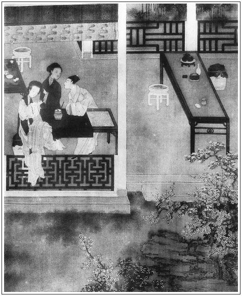

張回上一回結因，下一回成果，此回乃將因做果之時之事也。然而卻是兩段文字：一段定挨光，一段做挨光。寫十分光，卻先寫五件事，後又寫一件事，才寫十分光。而寫十分光內，卻又寫九個「此事便休了」，分明板板寫出，卻又生活不凡。且見後文，金蓮如於三分、四分光時便走，五七分時便走，王婆所云「我不能拉住他」。總之到九分光時，如若不肯，王婆亦止云「來搭救」，西門「此事便休」，「再也難成」。然則挨光雖王婆定下，而光之能成，到底是金蓮自定也。寫婦人之淫若此。
後半寫挨光，便是前面所定之挨光也。看他偏是照前說出者一樣說去，偏令看者不覺一毫重複，止見異樣生動，自是化工手筆。
看他於五分光成時，止用「王婆將一手往臉一摸」，便使上下十分光皆出，真是異樣妙筆。
《金瓶梅》純是異樣穿插的文字，唯此數回乃最清晰者。蓋單講金蓮偷期，亦是正文中之必不可苟者，而於閒扯白話時，乃借月娘、嬌兒等攏入金蓮。一邊敲擊正文，全不費呆重之筆；一邊卻又照管家裡眾人，不致冷落，直一筆作三四筆用也。
文內寫西門慶來，必拿灑金川扇兒。前回云「手裡拿著灑金川扇兒」，第一回云「卜志道送我一把真川金扇兒」，直至第八回內，又云「婦人見他手中拿著一把紅骨細灑金金釘鉸川扇兒」。吾不知其用筆之妙，何以草蛇灰線之如此也。何則？金、瓶、梅蓋作者寫西門慶精神注瀉之人也。乃第一回時，春梅已於「大丫頭」三字影出。至瓶兒，則不啻心頭口頭頻頻相照。而金蓮，雖曾自打虎過下，卻並未與西門一照於未挑簾之前，則一面寫武二自打虎做都頭文後，為單出筆寫金蓮這邊，而西門為此書正經香火，今為寫金蓮這邊，遂致一向冷落，絕不照顧。在他書則可，在《金瓶梅》豈肯留此綻漏者哉！況且單寫金蓮於挑簾時出一西門，亦如忽然來到已前不聞名姓之西門，則真與《水滸》之文何異？而敘得武大、武二相會，即忙敘金蓮，敘勾挑小叔，又即忙敘武大兄弟分手，又即忙敘簾子等事，作者心頭固有一西門慶在內，不曾忘記。而讀者眼底不幾半日冷落西門氏耶？朦朧雙眼，疑簾外現身之西門，無異《水滸》中臨時方出之西門也。今看他偏有三十分巧，三十分滑，三十分輕快，三十分討便宜處，寫一金扇出來，且即於敘卜志道時，寫一金扇出來。夫雖於迎打虎那日，大酒樓上放下西門、伯爵、希大三人，止因有此金扇作幌伏線，而便不嫌半日查洋洋寫武大、寫武二、寫金蓮如許文字。後於挑簾時一出西門，止用將金扇一幌，即作者不言，而本文亦不與《水滸》更改一事，乃看官眼底自知為《金瓶》內之西門，不是《水滸》之西門。且將半日敘金蓮之筆，武大、武二之筆，皆放入客位內，依舊現出西門慶是正經香火，不是《水滸》中為武松寫出金蓮，為金蓮寫出西門。卻明明是為西門方寫金蓮，為金蓮方寫武松。一如講西門慶連日不自在，因卓二姐死，而今日簾下撞著的婦人，其姓名來歷乃如此如此。說話者恐臨時事冗難敘，乃為之預先倒算出來，使讀者心亮，不致說話者臨時費唇舌。是寫一小小金扇物事，便使千言萬語一篇上下兩半回文字，既明明寫出，皆化為烏有，而半日不置一語、不題一事之西門慶，乃復活跳了來。且不但此時活跳出來，適才不置一語、不題一事之時，無非是西門氏帳簿上開原委，罪案上寫情由，與武大、武二絕不相干。試想作者，亦安有閒工夫與不相干之人寫家常哉！此是作者異樣心情寫出來。而寫完放筆，仰天問世，不覺失聲大哭日：「我此等心力，上問千古，下問百世，亦安敢望有一人知我心者哉！」故金扇兒必是卜志道送來，而挑簾時金扇一照，成衣時金扇又一照，躍躍動人心目。作者又恐真個被人知道，乃又插入第八回內，使金蓮扯之。一者收拾金扇了當，二者將看官瞞過，俱令在卜志道家合夥算帳。今卻被我一眼覷見，九原之下，作者必大哭大笑。今夜五更，燈花影裡，我亦眼淚盈把，笑聲驚動妻孥兒子輩夢魂也。
然而作者於第二回內，不寫婦人勾挑武二哥，豈不省手？不知作者蓋言金蓮結果時，如何一呆至此，還平心穩意要嫁武二哥哉。故先於此回內，特特描寫一番，遂令後九十回文中，金蓮不自揣度，肯嫁武二，一團癡念，緊相照應。人雖鶻突，文卻不可鶻突也。然則西門慶被色迷，潘金蓮亦被色迷，可懼，可思。
詩曰：
乍對不相識，徐思似有情。
杯前交一面，花底戀雙睛。
傞亞驚新態，含胡問舊名。
影含今夜燭，心意幾交橫。

話說西門慶央王婆，一心要會那雌兒一面，便道：「乾娘，你端的與我說這件事成，我便送十兩銀子與你。」王婆道：「大官人，你聽我說：但凡『挨光』的兩個字最難。怎的是『挨光』？比如如今俗呼『偷情』就是了。要五件事俱全，方才行的。第一要潘安的貌；第二要驢大行貨；第三要鄧通般有錢；第四要青春少小，就要綿裡針一般軟款忍耐；第五要閒工夫。此五件，喚做『潘驢鄧小閒』。都全了，此事便獲得著。」張夾未有十分光，先出五件事。文字掩遇，妙絕。西門慶道：「實不瞞你說，這這五件事我都有。第一件，我的貌雖比不得潘安，也充得過；第二件，我小時在三街兩巷游串，也曾養得好大龜；第三，我家裡也有幾貫錢財，雖不及鄧通，也頗得過日子；第四，我最忍耐，他便打我四百頓，休想我回他一拳；第五，我最有閒工夫，不然如何來得恁勤。張夾第五隻在眼前一映，便鮮活如見。做文只在拿輕放重也。乾娘，你自作成，完備了時，我自重重謝你。」王婆道：「大官人，你說五件事都全，我知道還有一件事打攪，也多是成不得。」西門慶道：「且說，甚麼一件事打攪？」
王婆道：「大官人休怪老身直言，但凡挨光最難，十分，有使錢到九分九厘，也有難成處。我知你從來慳吝，不肯胡亂便使錢，只這件打攪。」張夾五件後又有一件，然則前雲鄧通是般有錢，此雲使錢也，有錢不使何益？故此件又第一要緊也。西門慶道：「這個容易，我只聽你言語便了。」王婆道：「若大官人肯使錢時，張夾又盡一句，總之王婆要緊事在此也。老身有一條妙計，須交大官人和這雌兒會一面。」西門慶道：「端的有甚妙計？」王婆笑道：「今日晚了，且回去，過半年三個月來商量。」張夾又盪開。情生動。西門慶央及道：「乾娘，你休撒科！自作成我則個，恩有重報。」王婆笑哈哈道：「大官人卻又慌了。老身這條計，雖然入不得武成王廟，端的強似孫武子教女兵，十捉八九著。今日實對你說了罷：這個雌兒來歷，雖然微末出身，卻倒百伶百俐，會一手好彈唱，針指女工，百家歌曲，雙陸象棋，無所不知。小名叫做金蓮，娘家姓潘，原是南門外潘裁的女兒，張夾略過王招宣。妙絕。賣在張大戶家學彈唱。後因大戶年老，打發出來，不要武大一文錢，白白與了他為妻。這雌兒等閒不出來，老身無事常過去與他閒坐。他有事亦來請我理會，他也叫我做乾娘。武大這兩日出門早。大官人如幹此事，便買一疋藍綢、一疋白綢、一疋白絹，再用十兩好綿，都把來與老身。老身卻走過去問他借歷日，央及他揀個好日期，叫個裁縫來做。他若見我這般說，揀了日期，不肯與我來做時，此事便休了；張夾一個「便休」。他若歡天喜地說：『我替你做。』不要我叫裁縫，這光便有一分了。繡眉計料如指掌。張夾一分光。我便請得他來做，就替我縫，這光便二分了。張夾二分光。他若來做時，午間我卻安排些酒食點心請他吃。他若說不便當，定要將去家中做，此事便休了；張夾兩個「便休」。他不言語吃了時，這光便有三分了。張夾三分光。這一日你也莫來，直至第三日，晌午前後，你整整齊齊打扮了來，以咳嗽為號，你在門前叫道：『怎的連日不見王乾娘？我買盞茶吃。』我便出來請你入房裡坐喫茶。他若見你便起身來，走了歸去，難道我扯住他不成？此事便休了。張夾上文兩個「此事便休了。」此處又添一句，生動之極。三個「便休」。他若見你入來，不動身時，這光便有四分了。張夾四分光。坐下時，我便對雌兒說道：『這個便是與我衣服施主的官人，虧殺他。』我便誇大官人許多好處，你便賣弄他針指。若是他不來兜攬答應時，此事便休了；張夾四個「便休」。他若口中答應與你說話時，這光便有五分了。張夾五分光。我便道：『卻難為這位娘子與我作成出手做，虧殺你兩施主，一個出錢，一個出力。不是老身路歧相央，難得這位娘子在這裡，官人做個主人替娘子澆澆手。』你便取銀子出來，央我買。若是他便走時，難道我扯住他？此事便休了。張夾又對鎖上一句，五個「便休」。他若是不動身時，事務易成，這光便有六分了。張夾六分光。我卻拿銀子，臨出門時對他說：繡眉井井有條。『有勞娘子相待官人坐一坐。』他若起身走了家去，我終不成阻擋他？此事便休了。張夾又換一句，卻一樣雙句串下。六個「便休」。若是他不起身，又好了，這光便有七分了。張夾七分光。待我買得東西提在桌子上，便說：『娘子且收拾過生活去，且吃一杯兒酒，難得這官人壞錢。』他不肯和你同桌吃，去了，此事便休了。張夾七個「便休」。若是他不起身，此事又好了，這光便有八分了。張夾八分光。待他吃得酒濃時，正說得入港，我便推道沒了酒，再交你買，你便拿銀子，又央我買酒去並果子來配酒。我把門拽上，關你兩個在屋裡。他若焦燥跑了歸去時，此事便休了；張夾八個「便休」。他若由我拽上門，不焦躁時，這光便有九分，張夾九分光。只欠一分了。張夾妙在說完九分，卻又說出一分來了。生動異常。只是這一分倒難。大官人你在房裡，便著幾句甜話兒說入去，卻不可燥暴，便去動手動腳打攪了事，那時我不管你。你先把袖子向桌子上拂落一雙箸下去，只推拾箸，將手去他腳上捏一捏。他若張眉內有十一「他若」，四「若是他」，錯落盡致，不細注。鬧將起來，我自來搭救。此事便休了，張夾九個「便休」。卻又放這樣幾句在上，妙絕。十分「光」，卻用九個「便休」描出，而一毫不板。奇絕。妙絕。再也難成。若是他不做聲時，此事十分光了。張夾十分光。這十分光做完備，你怎的謝我？」張夾要緊接筍。西門慶聽了大喜道：「雖然上不得凌煙閣，乾娘你這條計，端的絕品好妙計！」張夾只讚好計，與各人心事，如畫。王婆道：「卻不要忘了許我那十兩銀子。」繡旁要緊的。張夾婆子又叮嚀，只是他的心事。文入化境。西門慶道：「便得一片橘皮吃，切莫忘了洞庭湖。這條計，乾娘幾時可行？」婆道：「只今晚來有回報。我如今趁武大未歸，過去問他借歷日，細細說與他。你快使人送將綢絹綿子來，休要遲了。」西門慶道：「乾娘，這是我的事，如何敢失信。」於是作別了王婆，離了茶肆，就去街上買了綢絹三疋並十兩清水好綿。家裡叫了玳安兒用氈包包了，一直送入王婆家來。王婆歡喜收下，打發小廝回去。正是：
巫山雲雨幾時就，莫負襄王築楚台。
當下王婆收了綢絹綿子，開了後門，張夾記著，後門出現，一。走過武大家來。那婦人接著，走去樓上坐的。王婆道：「娘子怎的這兩日不過貧家喫茶？」那婦人道：「便是我這幾日身子不快，懶走動的。」王婆道：「娘子家裡有歷日，借與老身看一看，要個裁衣的日子。」婦人道：「乾娘裁甚衣服？」王婆道：「便是因老身十病九痛，怕一時有些山高水低，我兒子又不在家。」婦人道：「大哥怎的一向不見？」王婆道：「那廝跟了個客人在外邊，不見個音信回來，老身日逐耽心不下。」婦人道：「大哥今年多少年紀？」王婆道：「那廝十七歲了。」婦人道：「怎的不與他尋個親事，繡旁工夫全做在此等處！與乾娘也替得手？」王婆道：「因是這等說，家中沒人。待老身東楞西補的來，早晚要替他尋下個兒。等那廝來，卻再理會。見如今老身白日黑夜只發喘咳嗽，身子打碎般，睡不倒的，只害疼，一時先要預備下送終衣服。難得一個財主官人，常在貧家喫茶，但凡他宅裡看病，買使女，說親，見老身這般本分，大小事兒無不管顧老身。又佈施了老身一套送終衣料，繡眉說起便及送終，此亦王婆之諱。綢絹表裡俱全，又有若幹好綿，放在家裡一年有餘，不能夠做得。今年覺得好生不濟，不想又撞著閏月，趁著兩日倒閒，要做又被那裁縫勒掯，只推生活忙，不肯來做。老身說不得這苦也！」張夾寫婆子真是舌上生花。那婦人聽了笑道：「只怕奴家做得不中意。繡旁煞是技癢。若是不嫌時，奴這幾日倒閒，出手與乾娘做如何？」那婆子聽了，堆下笑來說道：「若得娘子貴手做時，老身便死也得好處去。久聞娘子好針指，只是不敢來相央。」那婦人道：「這個何妨！既是許了乾娘，務要與乾娘做了，將歷日去交人揀了黃道好日，奴便動手。」王婆道：「娘子休推老身不知，你詩詞百家曲兒內字樣，你不知識了多少，如何交人看歷日？」婦人微笑道：「奴家自幼失學。」婆子道：「好說，好說。」便取歷日遞與婦人。婦人接在手內，看了一回，道：「明日是破日，後日也不好，直到外後日方是裁衣日期。」王婆一把手取過歷頭來掛在牆上，便道：「若得娘子肯與老身做時，就是一點福星。繡旁老奸甚巧。何用選日！老身也曾央人看來，說明日是個破日，老身只道裁衣日不用破日，我不忌他。」那婦人道：「歸壽衣服，正用破日便好。」王婆道：「既是娘子肯作成，老身膽大，只是明日起動娘子，到寒家則個。」婦人道：「何不將過來做？」王婆道：「便是老身也要看娘子做生活，又怕門首沒人。」婦人道：「既是這等說，奴明日飯後過來。」那婆子千恩萬謝下樓去了，當晚回覆了西門慶話，張夾點水不漏。約定後日准來。當夜無話。
次日清晨，王婆收拾房內乾淨，預備下針線，安排了茶水，在家等候。且說武大吃了早飯，挑著擔兒自出去了。張夾又點武大，百忙裡都照管到。那婦人把簾兒掛了，張夾簾子還有餘波，文心何其周匝也。簾子十二。吩咐迎兒看家，從後門張夾後門二。走過王婆家來。那婆子歡喜無限，接入房裡坐下，便濃濃點一盞胡桃松子泡茶與婦人吃了。抹得桌子乾淨，便取出那綢絹三疋來。婦人量了長短，裁得完備，縫將起來。婆子看了，口裡不住喝采道：「好手段，老身也活了六七十歲，眼裡真個不曾見這般好針指！」那婦人縫到日中，王婆安排些酒食請他，又下了一箸面與那婦人吃。
再縫一歇，將次晚來，便收拾了生活，自歸家去。恰好武大挑擔兒進門，婦人拽門下了簾子。張夾簾子十三。武大入屋裡，看見老婆面色微紅，問道：「你那裡來？」婦人應道：「便是間壁乾娘央我做送終衣服，日中安排些酒食點心請我吃。」武大道：「你也不要吃他的才是，我們也有央及他處。他便央你做得衣裳，你便自歸來吃些點心，不值得甚麼，便攪撓他。你明日再去做時，帶些錢在身邊，也買些酒食與他回禮。常言道：遠親不如近鄰，休要失了人情。他若不肯交你還禮時，你便拿了生活來家，做還與他便了。」正是：
阿母牢籠設計深，大郎愚鹵不知音。
帶錢買酒酬奸詐，卻把婆娘自送人。繡旁語俗而真。
婦人聽了武大言語，當晚無話。
次日飯後，武大挑擔兒出去了，王婆便踅過來相請。婦人去到他家屋裡，取出生活來，一面縫來。王婆忙點茶來與他吃了茶。看看縫到日中，張夾又一日日中。那婦人向袖中取出三百文錢來，向王婆說道：「乾娘，奴和你買盞酒吃。」王婆道：「啊呀，那裡有這個道理。老身央及娘子在這裡做生活，如何交娘子倒出錢，婆子的酒食，不到吃傷了哩！」繡眉三字非謙，卻是定論。那婦人道：「卻是拙夫吩咐奴來，若是乾娘見外時，只是將了家去，做還乾娘便了。」那婆子聽了道：「大郎直恁地曉事！既然娘子這般說時，老身且收下。」這婆子生怕打攪了事，自又添錢去買好酒好食來，慇勤相待。看官聽說：但凡世上婦人，由你十分精細，被小意兒縱十個九個著了道兒。張夾又入幾句閒言，文字方不死板。這婆子安排了酒食點心，和那婦人吃了。再縫了一歇，看看晚來，千恩萬謝歸去了。
話休絮煩。第三日早飯後，王婆只張武大出去了，便走過後門首張夾後門三。叫道：「娘子，老身大膽。」張夾如聞其聲。那婦人從樓上應道：「奴卻待來也。」兩個廝見了，來到王婆房裡坐下，取過生活來縫。那婆子點茶來吃，自不必說。婦人看看縫到晌午前後。張夾又一日晌午。
卻說西門慶巴不到此日，繡旁也好一等了。打選衣帽齊齊整整，身邊帶著三五兩銀子，手裡拿著灑金川扇兒，張夾金扇三現。搖搖擺擺逕往紫石街來。到王婆門首，便咳嗽道：「王乾娘，連日如何不見？」那婆子瞧科，便應道：「兀的誰叫老娘？」西門慶道：「是我。」那婆子趕出來看了，笑道：「我只道是誰，原來是大官人！你來得正好，且請入屋裡去看一看。」把西門慶袖子只一拖，拖進房裡來，對那婦人道：「這個便是與老身衣料施主官人。」西門慶睜眼看著那婦人：雲鬟疊翠，粉面生春，張夾是數日眠思夢想，忽然相見的身份心事。上穿白布衫兒，桃紅裙子，藍比甲，正在房裡做衣服。見西門慶過來，便把頭低了。繡旁媚致。張旁一低頭了。這西門慶連忙向前屈身唱喏。那婦人隨即放下生活，還了萬福。王婆便道：「難得官人與老身段疋綢絹，放在家一年有餘，不曾得做，虧殺鄰家這位娘子出手與老身做成全了。真個是布機也似好針線，縫的又好又密，真個難得！大官人，你過來且看一看。」西門慶拿起衣服來看了，一面喝采，口裡道：「這位娘子，傳得這等好針指，神仙一般的手段！」那婦人低頭笑道：繡旁來了。張旁二低頭笑。「官人休笑話。」西門慶故問王婆道：「乾娘，不敢動問，這位娘子是誰家宅上的娘子？」王婆道：「你猜。」張夾如畫。西門慶道：「小人如何猜得著。」王婆哈哈笑道：「大官人你請坐，我對你說了罷。」那西門慶與婦人對面坐下。那婆子道：「好交大官人得知罷，你那日屋簷下走，打得正好。」張夾偏點出。西門慶道：「就是那日在門首叉竿打了我的？倒不知是誰家宅上娘子？」婦人分外把頭低了一低，笑道：張旁三把頭低了一低笑。張夾描婦人有心。妙甚。「那日奴誤衝撞，官人休怪！」繡眉嬌情慾絕。西門慶連忙應道：「小人不敢。」王婆道：「就是這位，卻是間壁武大娘子。」西門慶道：「原來如此，小人失瞻了。」王婆因望婦人說道：「娘子你認得這位官人麼？」婦人道：「不識得。」婆子道：「這位官人，便是本縣裡一個財主，知縣相公也和他來往，叫做西門大官人。家有萬萬貫錢財，在縣門前開生藥鋪。家中錢過北斗，米爛成倉，黃的是金，白的是銀，圓的是珠，放光的是寶，也有犀牛頭上角，大象口中牙。他家大娘子，也是我說的媒，是吳千戶家小姐，生得百伶百俐。」因問：「大官人，怎的不過貧家喫茶？」
西門慶道：「便是家中連日小女有人家定了，不得閒來。」婆子道：「大姐有誰家定了？怎的不請老身去說媒？」西門慶道：「被東京八十萬禁軍楊提督親家陳宅定了。張夾寫生平得意事，有體面事，開頭便到。寫盡人情也。他兒子陳敬濟才十七歲，還上學堂。不是也請乾娘說媒，他那邊有了個文嫂兒來討帖兒，張夾又出文嫂兒。俺這裡又使常在家中走的賣翠花的薛嫂兒，張夾又出薛嫂兒，百忙卻句句是正中偏有此閒筆，文。妙，妙。同做保山，說此親事。乾娘若肯去，到明日下小茶，我使人來請你。」婆子哈哈笑道：「老身哄大官人耍子。俺這媒人們都是狗娘養下來的，他們說親時又沒我，做成的熟飯兒怎肯搭上老身一分？常言道：當行壓當行。到明日娶過了門時，老身胡亂三朝五日，拿上些人情去走走，討得一張半張桌面，到是正經。張夾總是以「保山」二字刺入金蓮心中。怎的好和人鬥氣！」兩個一遞一句說了一回。婆子只顧誇獎西門慶，口裡假嘈，那婦人便低了頭縫針線。
水性從來是女流，背夫常與外人偷。
金蓮心愛西門慶，淫蕩春心不自由。
西門慶見金蓮有幾分情意歡喜，恨不得就要成雙。王婆便去點兩盞茶來，遞一盞西門慶，一盞與婦人，說道：「娘子相待官人吃些茶。」旋又看著西門慶，把手在臉上摸一摸，西門慶已知有五分光了。張夾至五分光，忽然點出，則前後十分光，不言皆出。自古「風流茶說合，酒是色媒人」。王婆便道：「大官人不來，老身也不敢去宅上相請。一者緣法撞遇，二者來得正好。常言道：一客不煩二主。大官人便是出錢的，這位娘子便是出力的，虧殺你這兩位施主。不是老身路歧相煩，難得這位娘子在這裡，官人好與老身做個主人，拿出些銀子買些酒食來，與娘子澆澆手，如何？」張夾一路說來，純是定挨光時說過的話，乃一一重說出，卻使看者不覺其重，故妙。西門慶道：「小人也見不到這裡，有銀子在此。」便向茄袋裡取出來，約有一兩一塊，遞與王婆，交備辦酒食。那婦人便道「不消生受。」口裡說著恰不動身。張旁一不動身。王婆接了銀子，臨出門便道：「有勞娘子相陪大官人坐一坐，我去就來。」那婦人道：「乾娘免了罷。」卻亦不動身。繡眉身不動處；正是心動處。張旁二不動身。王婆便出門去了，丟下西門慶和那婦人在屋裡。
這西門慶一雙眼不轉睛，只看著那婦人。那婆娘也把眼來偷睃西門慶，又低著頭做生活。張旁四低頭做生活。張夾寫得如火如錦。不多時，王婆買了見成肥鵝燒鴨、熟肉鮮鮓、細巧果子，歸來盡把盤碟盛了，張夾必寫見成東西，寫婆子恐怕撐開，心事如畫。擺在房裡桌子上。看那婦人道：「娘子且收拾過生活，吃一杯兒酒。」那婦人道：「你自陪大官人吃，奴卻不當。」那婆子道：「正是專與娘子澆手，如何卻說這話！」一面將盤饌卻擺在面前，三人坐下，把酒來斟。西門慶拿起酒盞來道：「乾娘相待娘子滿飲幾杯。」婦人謝道：「奴家量淺，吃不得。」王婆道：「老身得知娘子洪飲，且請開懷吃兩盞兒。」那婦人一面接酒在手，向二人各道了萬福。西門慶拿起箸來說道：「乾娘替我勸娘子些菜兒。」那婆子揀好的遞將過來與婦人吃。一連斟了三巡酒，那婆子便去燙酒來。西門慶道：「小人不敢動問，娘子青春多少？」婦人低頭應道：張旁五低頭應。「二十五歲。」西門慶道：「娘子到與家下賤內同庚，也是庚辰屬龍的。他是八月十五日子時。」婦人又回應道：「將天比地，折殺奴家。」王婆便插口道：「好個精細的娘子，百伶百俐，又不枉做得一手好針線。諸子百家，雙陸象棋，拆牌道字，皆通。一筆好寫。」西門慶道：「卻是那裡去討。」王婆道：「不是老身說是非，大官人宅上有許多，那裡討得一個似娘子的！」西門慶道：「便是這等，一言難盡。只是小人命薄，不曾招得一個好的在家裡。」
王婆道：「大官人先頭娘子須也好。」西門慶道：「休說！我先妻若在時，卻不恁的家無主，屋到豎。如今身邊枉自有三五七口人吃飯，都不管事。」婆子嘈道：「連我也忘了，沒有大娘子得幾年了？」西門慶道：「說不得，小人先妻陳氏，雖是微末出身，卻倒百伶百俐，繡眉語俱有意。是件都替的我。如今不幸他沒了，已過三年來。今繼娶這個賤累，又常有疾病，不管事，家裡的勾當都七顛八倒。為何小人只是走了出來？在家裡時，便要嘔氣。」婆子道：「大官人，休怪我直言，你先頭娘子並如今娘子，也沒這大娘子這手針線，這一表人物。」西門慶道：「便是房下們也沒這大娘子一般兒風流。」繡旁妙。繡眉如此情意，較武二官何如？那婆子笑道：「官人，你養的外宅東街上住的，如何不請老身去喫茶？」西門慶道：「便是唱慢曲兒的張惜春。我見他是路歧人，不喜歡。」婆子又道：「官人你和勾欄中李嬌兒卻長久。」西門慶道：「這個人見今已娶在家裡。若得他會當家時，自冊正了他。」王婆道：「與卓二姐卻相交得好？」西門慶道：「卓丟兒別要說起，我也娶在家做了第三房。近來得了個細疾，卻又沒了。」婆子道：「耶樂，耶樂！若有似大娘子這般中官人意的，來宅上說，不妨事麼？」西門慶道：「我的爹娘俱已沒了，我自主張，誰敢說個不字？」王婆道：「我自說耍，急切便那裡有這般中官人意的！」繡眉遠在千里，近只目前。西門慶道：「做甚麼便沒？只恨我夫妻緣分上薄，自不撞著哩。」西門慶和婆子一遞一句說了一回。張夾將上文一總。王婆道：「正好吃酒，卻又沒了。官人休怪老身差撥，買一瓶兒酒來吃如何？」西門慶便向茄袋內，還有三四兩散銀子，都與王婆，說道：「乾娘，你拿了去，要吃時只顧取來，多的乾娘便就收了。」那婆子謝了起身。睃那粉頭時，三鍾酒下肚，哄動春心，又自兩個言來語去，都有意了，只低了頭不起身。張夾以上只用西門、婆子互相自嘈，寫婦人，止用五「低頭」，兩「不動身」，便使一篇三人如火文字眉眼皆動，而結以「只低了頭」，「不動身」，總上一段，是好筆力。又使王婆、西門一遞一句內，無不眼中有一婦人也。正是：
眼意眉情卒未休，姻緣相湊遇風流。
王婆貪賄無他技，一味花言巧舌頭。
文回文禹門云：天下事有視為極難，而作去甚易者；亦有視為甚易，而作去極難者。世上原無印板情事也，有胸中欲說之話，而臨時竟用不著者，有意外不經之談，而觸機竟道出者。大凡一言一事，皆令人料定，便無甚趣味矣。挨光一回，有誇為絕妙文章者，余不覺啞然失笑。文字忌直，須用曲筆，文字忌率，須用活筆。挨光一層，早被王婆子全已說破。此一回不過就題敷衍，略者詳之，虛者實之，兩回仍是一回也。
故《三國誌》中，每設一計，只用附耳低言，如此如此，使人急於要看下文，方知如此如此，原來如此也。若事前合盤托出，則下文仍是如此如此，又安得謂為絕妙文章哉！余頗不喜看此一回，以其味同嚼蠟也。喜看此回者，必是淫心蕩漾，意欲仿而行之者也。曾一思調情豈有定法乎？按著則例，依著步武，順著次序，前去偷人，其不挨大耳刮子也，算是他祖宗有靈。
按：「有誇為絕妙文章者」，系指張竹坡原評：「妙絕十分光，卻用九個『便休』描寫，而一毫不板：奇絕，妙絕！」